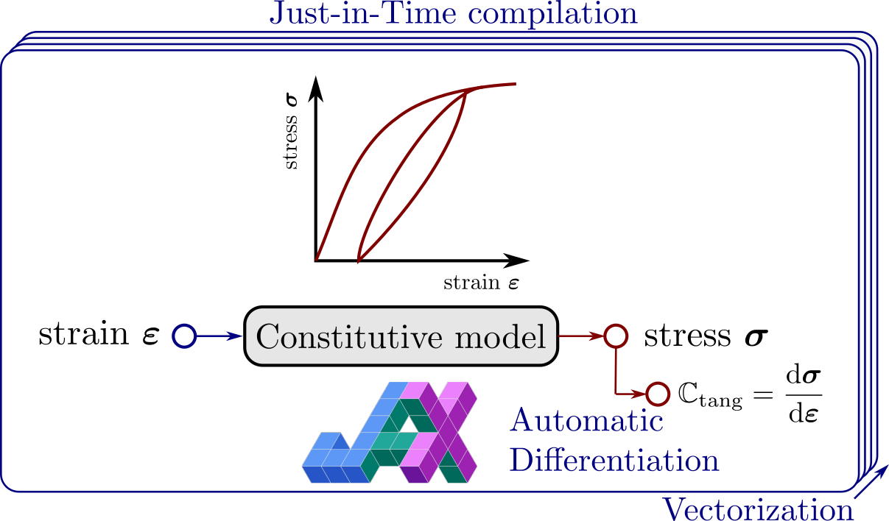

Documentation#
{kind=link}
jaxmat is an open-source library for implementing material constitutive models in a way that integrates seamlessly with modern machine learning frameworks and existing finite element software.
Aim and scope#
The library is implemented in JAX and heavily relies on additional features provided by the JAX ecosystem, in particular the equinox, diffrax, and optimistix libraries. The design choices are based on the following premises:
User-friendliness:
jaxmatprovides domain-specific abstractions that simplify the definition of complex material models. It is not a database of hard-coded material behaviors with fixed parameters. Instead, it offers a generic and extensible framework for users to define, compose, and calibrate their own constitutive models with minimal boilerplate.Differentiability: We fully exploit JAX’s Automatic Differentiation (AD) capabilities to eliminate the need for manually deriving consistent tangent operators, Jacobians of implicit systems, normal vectors to plastic surfaces, hyperelastic stress expressions, and more. In
jaxmat, every input and parameter of a constitutive model is differentiable, making it easy to compute sensitivities with respect to material or even algorithmic parameters! These features are essential for tasks such as material parameter identification, solving inverse problems, and performing uncertainty quantification.Modularity: The library is designed to be highly modular, allowing users to easily mix and match modeling components. For example, in a generic elastoviscoplastic model, you can independently swap out the plastic yield surface, the hardening laws or the viscous flow, independently. Each component can also be replaced with a data-driven alternative, such as a neural network, without disrupting the overall structure.
Efficiency:
jaxmatmakes full use of JAX features such as Just-In-Time compilation (jax.jit), automatic vectorization (jax.vmap) and hardware acceleration (CPU or GPU through the XLA compiler). Constitutive models can be evaluated extremely efficiently and in parallel across batches of material points. Additionally, we have designed and selected algorithms specifically suited to the needs of computational mechanics for maximum performance, robustness, and generality, see the Sharp bits section.
Installation#
Simply run a pip install. Use jaxmat[gpu] for GPU support.
pip install jaxmat
You may need to update nvidia-cublas-cu12 as there are some issues with the version shipped with jax-0.6.1.
pip install --upgrade nvidia-cublas-cu12
References#
See also
This project builds upon implementations of jax-based material models for FEniCSx in the dolfinx_materials package.
{kind=link}